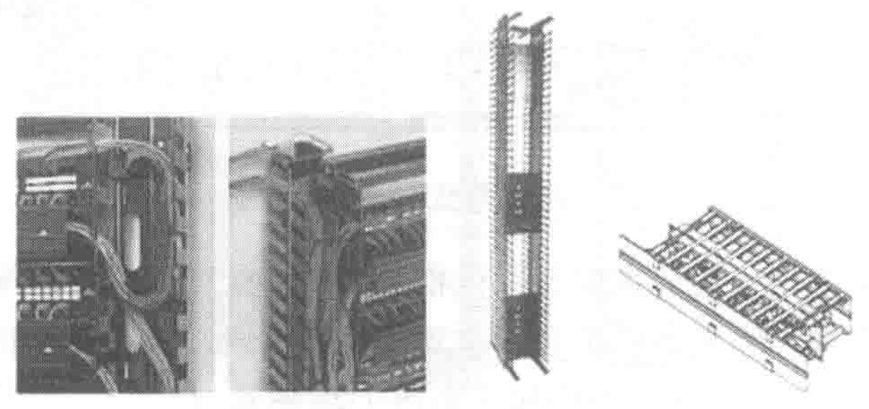
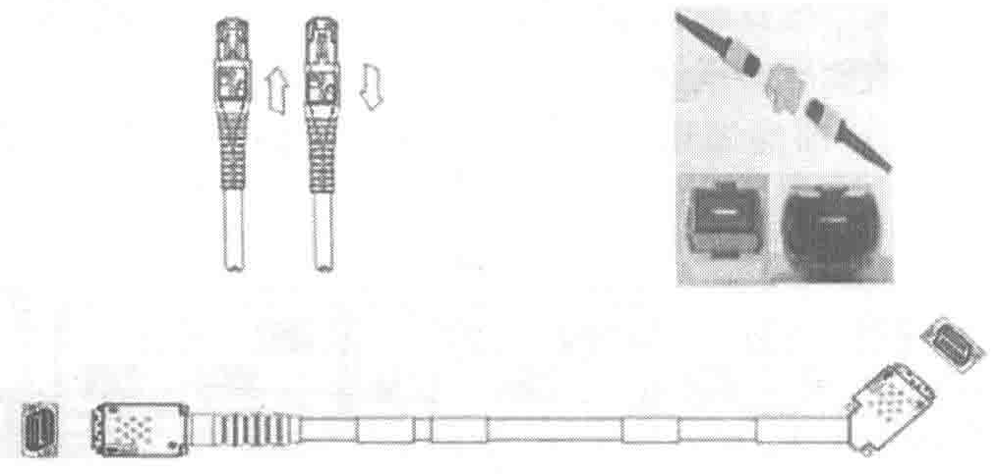

理效率，使系统中杂乱无章的设备线缆与跳线的管理得到很大的改善。水平线缆管理器主要用于容纳内部设备之间的连接，有 1U 和 2U、单面和双面、有盖和无盖等不同结构组合，线缆可以从左右、上下出入，有些还具备前后出入的能力。垂直线缆管理器分机柜内和机柜外两种。内部的垂直线缆管理器主要用于管理机柜内部设备之间的连接，一般配备滑槽式盖板；机柜外的垂直线缆管理器主要用于管理相邻机柜设备之间的连接，一般配备可左右开启的铰链门。线缆管理器的构成如图 7-28 所示。

7.5.5 设备线缆与跳线
数据中心通过设备线缆与跳线实现端口之间的连接。设备线缆与跳线可采用铜缆或光纤。它们的性能指标应满足相应标准的要求。
光、电设备线缆与跳线应和水平或主干光（电）缆的等级保持一致，还应与网络设备、配线设备端口连接硬件的等级保持一致，并且能够互通。
在端口密集的配线和网络机柜与机架上，可以使用高密度的铜缆和光纤跳线。这些跳线通过对传统插拔方式或接口密度的重新设计，在兼容标准化插口的前提下提高了高密度环境的插拔准确性和安全性。线缆跳线的构成如图 7-29 所示。

7.5.6 预端接系统
预端接系统是一套高密度、由工厂端接 / 测试的、符合标准的模块式连接解决方案，预